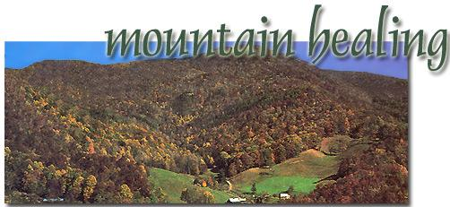
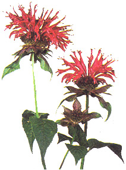
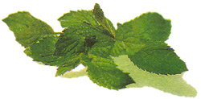
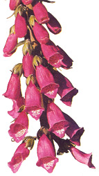
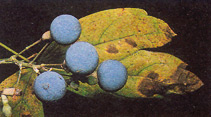
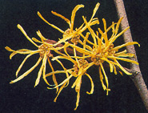

HERBAL REMEDIES
TOP TO BOTTOM: SOHM/PHOTO RESEARCHERS; NINA MASCARDI/IMAGE BANK;
WALTER H. HODGE/PETER ARNOLD; PHOTO RESEARCHERS
Medicinal plants of the Southern Appalachians
by Charles Dickson, PhD
In 1776, while the Declaration of Independence was being drafted, the great French botanist, Andre Michaux, stood atop North Carolina's Grandfather Mountain and sang the French national anthem. It was a moment that represented the culmination of years of exploration into the magnificent variety of plants that flourish in the southern Appalachians, a concentration of flora unequaled on the North American continent or even in the whole of Europe.
As significant as was the work of Michaux, Native American tribes such as the Cherokee and the Catawba had been roaming the lush hillsides and gorges for centuries prior to his time, discovering a multitude of uses for these plants-one of the most significant being medicinal. The region is a veritable outdoor pharmacy of medicinal plants, which were not only part of the recipes of yesterday's tribal medicine men, but continue to occupy a place in today's pharmacopoeias. In fact, so important are the botanical sources of modem medicines that the environmental scientist, G. Tyler Miller, has estimated that 40% of all the medicine on the shelves of today's drugstores have plant origins.
While any attempt at a complete listing of known medicinal plants of the southern Appalachians might require volumes, a brief walk along their paths will, I hope, serve to illustrate the enormous impact the area has had on modem medical practice.
Let's begin with a heart medication. A member of the figwort family, growing two to five feet in height, is the purple foxglove (Digitalis purpurea). With lance-shaped to oval leaves, these spires of thimble-like flowers-from white to pinkish lavender to red bloom from June to September. This beautiful plant is the source of digitalis, a cardiac stimulant extracted from the leaves that has kept millions of heart patients alive.
Foxglove is among the loveliest, most famous, most important, and most dangerous of medicinal plants. Used improperly, it is as likely to stop a heart as it is to keep it going.
Its usefulness was first discovered in 1775 by the English physician, William Withering. He had heard of an old woman who practiced folk medicine with herbs gathered from the countryside. A patient afflicted with excessive fluid retention due to congestive heart failure, whom Withering expected to die, was cured by this healer.From this woman's bag of weeds, Withering identified foxglove as the key element in treating swelling or edema associated with congestive heart failure. The paper he published in 1785 to inform other physicians of his findings is a classic of medical literature.
From heart medicine we move to what some have called the "Prozac of Europe." St. John's wort (Hypericum perforatum) is native to Europe but grows throughout the eastern United States, including the southern highlands. An erect perennial shrub with bright yellow flowers from June through September, it has found extensive use as a treatment for depression in European medical practice. It is beginning to enjoy increased usage in the United States; however, caution should be exercised in its use since St. John's wort contains hypericin, a photosensitory substance that reacts with light to cause skin burns in some people.
A traditional astringent (skin cleaner) and ingredient in numerous other pharmaceutical products is witch hazel (Hamamelis virginiana). It is a bush of the southern mountains that surprises us by blooming in autumn rather than spring, putting on a colorful display of bright yellow flower, that grow in feathery clusters. The name, witch hazel, developed from its reputed properties as a divining rod: folklore tells-A of the plant's tendency to bend toward the earth when held over underground water.
Witch hazel is extremely important commercially. The extract made by distilling the bark and leaves in alcohol has been used by pharmacists for more than a century. Bottles on the shelves of drugstores worldwide have labels recommending use of the extract for bruises. insect bites, sun burn, poison ivy rash, and as an after-shave lotion.
Still another abundant medicinal plant of southern Appalachia is the mayapple, known botanically as Podophyllum pelta-tum. These plants usually grow in clusters with umbrella-like leaves, a white inconspicuous flower, and a small greenish-yellow- fruit, whose sweet taste makes it ideal for jams, jellies, and preserves. A medicinal substance called podophyllum is obtained from the dried powdered root and, compounded with tincture of benzoin, is used as a caustic for the removal of warts and other papillomas.
During the warm months of August and September, when little else blooms in the fields and hillsides, the light blue flowers of Indian tobacco (Lobelia inflata) grace the landscape. The stems are yellow to purplish, quite hairy, and branched about midway. Its medicinal substance is an alkaloid called lobeline, which is derived from the leaves and tops of the plant, which, when dried to a powder, are greenish-yellow in color. Lobeline is used as a respiratory stimulant and for the treatment of spasmodic bronchitis and chronic emphysema. Its popular name comes from the fact that American Indians once smoked its leaves to relieve asthma and other ailments. In recent years, lobeline has also found use as an ingredient in preparations designed to help people curb the smoking habit.
Continuing our walk along the paths of the southern Appalachians, we see brilliant splashes of pumpkin-orange flowers signifying the presence of butterfly weed (Asclepias tuberosa). The name is appropriate because monarchs, swallowtails, and other butterflies are especially attracted to this member of the milkweed family when it is in bloom. Although no longer used in modern medicine because of the highly toxic glycosides in its roots, butterfly weed was long used by Native Americans, who powdered the roots and mixed them into a paste to spread on sores, as well as brewed its leaves to induce perspiration and expectoration in people with severe respiratory ailments such as pleurisy. Hence one of its alternative names: pleurisy root.
In early spring in the moist rich recesses of Appalachian forests, the smooth bluish stem and large single unfolding leaf of the blue cohosh plant (Caulophyllum thalictroides) stand out vividly against the surrounding bareness. As the plant grows, it blends in with the rest of the forest until late summer, when deep blue berries (which are actually seeds) attract the eye. Indian tribes used them to relieve rheumatism, colic, and menstrual cramps. Today, herbalists continue to use the roots to treat rheumatism.
By midsummer, fields and roads of the southern highlands are crowded with intricately patterned flat flower clusters of Queen Anne's lace (Daucus carota), a member of the carrot family. Through the years, extracts from this widely distributed biennial were used medicinally as diuretics and to dissolve kidney stones. The seeds were eaten to eliminate intestinal worms and gas.
While extracts of Queen Anne's lace are not generally used by today's herbalist as a diuretic, research has confirmed their effectiveness in dispelling intestinal gas. The wild root is also rich in vitamin A, but care should be taken not to ingest it in excessive amounts. (Too much vitamin A can be harmful to your health.)
Another plant which is native to eastern North America, including the southern Appalachians, is the Oswego tea plant (Monarda didyma), sometimes also called bee balm. The name comes from the use of its aromatic leaves by the Oswego Indians of western New York and also the Shakers, who thought the tea to be effective in treating colds and sore throats. Still other settlers steamed the plant and inhaled the fumes to clear sinuses. Although medicinal use of the plant is no longer widespread, the aromatic oil of Oswego tea continues to be used in the perfume industry.
No trip through the southern Appalachians would be complete without acknowledging one of the most widespread plants-Mentha piperita-which is the botanical name for the well-known peppermint. It has the unusual feature of square stems and rootstocks that take root along the ground, enabling the plant to spread from one growing season to the next. The oil is obtained by steam distillation of the above-ground parts and is used in many medicinal products, particularly cold remedies.
Our journey through the southern Appalachians has touched on but a few of the myriad plants with healing properties. In fact, the area is such a rich source of medicinal plants that the S. B. Penick Company, a botanical drug corporation headquartered in New York, maintained a branch office in Asheville, North Carolina for many years.
Since prehistoric times, humans have turned to plants for healing. The quest has not ended in disappointment. Modern pharmacology will continue to look for new sources of "green medicine," and one place to which it will surely return is the lush green forests of the southern Appalachians. For there has been, and will continue to be, healing in the mountains.
|
 |
 |
 |
|
 |
 |
 |